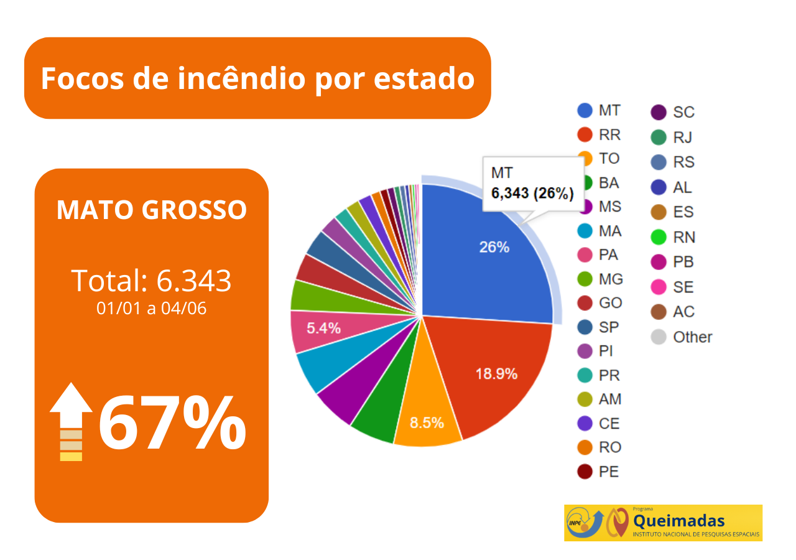

Monitoramento das queimadas na saúde respiratória

As queimadas, frequentemente realizadas para desmatamento ou limpeza de terrenos, geram sérios prejuízos à saúde respiratória da população. A fumaça liberada durante esses incêndios contém uma mistura tóxica de partículas finas, monóxido de carbono e compostos orgânicos voláteis. Quando inaladas, essas substâncias podem causar irritação nas vias respiratórias, agravando condições como asma, bronquite e outras doenças pulmonares. Além disso, a exposição prolongada à fumaça das queimadas pode levar ao desenvolvimento de doenças crônicas, como a Doença Pulmonar Obstrutiva Crônica (DPOC). Grupos mais vulneráveis, como crianças e idosos, são particularmente afetados, pois seus sistemas respiratórios são mais sensíveis. Portanto, é fundamental conscientizar a população sobre os riscos das queimadas e promover alternativas sustentáveis para evitar esses prejuízos à saúde.
Os altos índices de queimadas no Brasil têm se tornado uma preocupação crescente, especialmente em regiões como a Amazônia e o Cerrado. Esses incêndios, muitas vezes provocados por atividades humanas, como desmatamento e agricultura, resultam em sérios danos ao meio ambiente, afetando a biodiversidade e contribuindo para as mudanças climáticas. Além disso, as queimadas comprometem a qualidade do ar, impactando a saúde da população e gerando prejuízos econômicos. A falta de fiscalização e políticas públicas eficazes agrava a situação, tornando urgente a necessidade de ações que promovam a preservação ambiental e o desenvolvimento sustentável. A conscientização da sociedade e a implementação de medidas rigorosas são essenciais para reverter esse quadro alarmante.